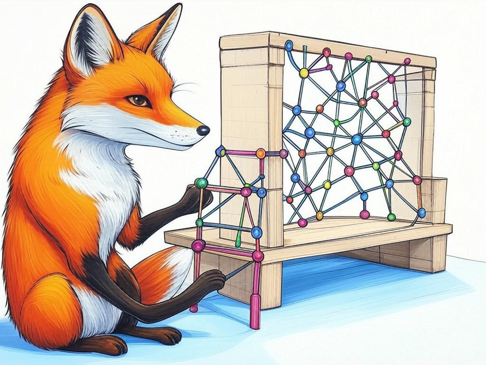
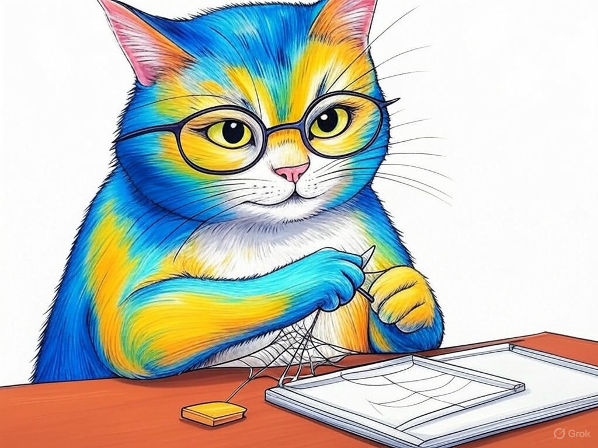

Unlocking the Potential of Your Business with Affordable Web Design and Development Services in Jeffersonville, IN
Table of Contents
- Introduction: Understanding Your Specific Challenges
- How Can Affordable Web Design Transform Your Business in Jeffersonville?
- What Are the Key Elements of a Cost-Effective Website?
- Can Your Website Reflect Jeffersonville's Unique Charm?
- Ensuring Your Website is Mobile-Friendly and Responsive
- Integrating SEO to Boost Your Local Search Rankings
- Conclusion: Your Implementation Plan and Next Steps
Introduction: Understanding Your Specific Challenges

We understand that navigating the world of affordable web design and development services in Jeffersonville, IN can feel overwhelming. You're not alone in this journey; many local businesses face similar challenges. Whether you're a small shop on Spring Street or a growing enterprise near the Ohio River, the need for a compelling online presence is universal. Affordable web design and development services in Jeffersonville, IN are crucial because they allow you to reach your audience without breaking the bank. In fact, studies show that small businesses investing in professional web design see an average increase of 27% in their conversion rates. In this article, we'll explore how you can leverage these services to transform your business. We'll cover everything from the key elements of a cost-effective website to integrating SEO for better local search rankings. Our goal is to equip you with the knowledge and tools to make informed decisions that drive your business forward. If you're struggling with understanding the value of a professional website, start by calculating the potential return on investment for your business specifically. This introduction sets the stage for the actionable insights to come, ensuring you're ready to tackle your website woes head-on.
So what? Understanding your challenges with affordable web design and development services in Jeffersonville, IN is the first step toward unlocking your business's potential online.How Can Affordable Web Design Transform Your Business in Jeffersonville?
You already know that a well-designed website can make a significant difference, but let's dive deeper into how affordable web design and development services in Jeffersonville, IN can truly transform your business. In our experience, businesses in Jeffersonville often benefit from a website that reflects the local charm and culture, such as incorporating elements of the Big Four Bridge or the vibrant arts scene. Here's how you can achieve this:
- Enhance User Experience: A user-friendly website increases engagement. For instance, a study by Forrester found that a well-designed user interface could raise your website's conversion rate by up to 200%.
- Boost Brand Credibility: A professional website instills trust in your customers. In Jeffersonville, where local businesses thrive on community trust, this is particularly important.
- Increase Visibility: With the right design, your site can rank higher in search results, making it easier for locals and tourists alike to find you.
So what? By leveraging affordable web design and development services in Jeffersonville, IN, you can transform your business into a more engaging, credible, and visible entity in the local market.
What Are the Key Elements of a Cost-Effective Website?
We know you're looking to get the most out of your investment in affordable web design and development services in Jeffersonville, IN. Let's break down the key elements that make a website cost-effective yet impactful. A cost-effective website should include:
- Clear Navigation: Users should find what they need quickly and easily. A study by HubSpot found that 94% of first impressions are design-related, emphasizing the importance of intuitive navigation.
- Responsive Design: Your website must look good and function well on all devices, especially given the high mobile usage in Jeffersonville.
- Quality Content: Engaging, relevant content keeps visitors on your site longer, increasing the chances of conversion.
- SEO Optimization: Incorporating SEO from the start ensures your site is visible to local searchers.
- User Experience: Does the element enhance the user's journey?
- Cost vs. Benefit: Does the element provide significant value relative to its cost?
- Local Relevance: Does the element resonate with Jeffersonville's audience?
Can Your Website Reflect Jeffersonville's Unique Charm?
You've come a long way in understanding affordable web design and development services in Jeffersonville, IN, and now it's time to consider how your website can reflect the unique charm of this vibrant city. Jeffersonville is known for its rich history and community spirit, which can be beautifully integrated into your website's design. For example, incorporating images of the Ohio River or the local arts scene can create a strong connection with your audience. A study by the Content Marketing Institute found that 88% of consumers are more likely to buy from a company that shares their values, which in Jeffersonville often includes a sense of community and local pride.
If you're struggling with capturing Jeffersonville's charm, do this specifically: include local landmarks or cultural references in your website's imagery and content. If you're unsure about how to integrate these elements, consider using a local photographer or artist to provide authentic visuals.So what? By reflecting Jeffersonville's unique charm, your website can foster a deeper connection with your local audience, enhancing both engagement and loyalty.
Ensuring Your Website is Mobile-Friendly and Responsive

You're well-versed in the importance of affordable web design and development services in Jeffersonville, IN, and now it's crucial to ensure your website is mobile-friendly and responsive. With over 60% of internet traffic coming from mobile devices, a non-responsive website can significantly hinder your business's reach. In Jeffersonville, where locals and tourists alike use their phones to explore and shop, this is particularly important.
If you're struggling with making your website mobile-friendly, do this specifically: use Google's Mobile-Friendly Test tool to check your site's performance on mobile devices. If you find issues, prioritize fixing them by adjusting your site's layout and content for smaller screens. Additionally, consider using a responsive design framework like Bootstrap to streamline the process.So what? By ensuring your website is mobile-friendly and responsive, you can reach a broader audience in Jeffersonville, enhancing your business's visibility and accessibility.
Integrating SEO to Boost Your Local Search Rankings
You've made great strides in understanding affordable web design and development services in Jeffersonville, IN, and now it's time to focus on integrating SEO to boost your local search rankings. SEO is crucial for ensuring your business appears when locals search for services or products you offer. In Jeffersonville, where competition can be fierce, a strong SEO strategy can make all the difference. A study by BrightLocal found that 97% of consumers used the internet to search for local businesses in 2021.
If you're struggling with SEO, do this specifically: start by optimizing your website for local keywords, such as 'budget-friendly web design in Jeffersonville' or 'SEO services Jeffersonville'. Ensure your site includes a Google My Business listing and local citations to enhance your local presence. Additionally, regularly update your content to keep it relevant and engaging.So what? By integrating SEO into your website, you can significantly improve your visibility in Jeffersonville, attracting more local customers and driving business growth.
Conclusion: Your Implementation Plan and Next Steps

You've now gained a comprehensive understanding of how affordable web design and development services in Jeffersonville, IN can transform your business. From enhancing user experience and reflecting local charm to ensuring mobile-friendliness and boosting SEO, you're equipped with the knowledge to make your website a powerful tool for growth. The key takeaways are clear: a well-designed, cost-effective website can increase your conversion rates, build brand credibility, and improve your local search rankings.
Your next steps should include implementing these strategies. Start by auditing your current website and identifying areas for improvement. Then, prioritize the changes based on their potential impact and feasibility. If you're feeling overwhelmed, remember that you're not alone—many businesses in Jeffersonville have successfully navigated these waters.We at Perfect Your Customer, LLC are here to help you every step of the way. Our team specializes in affordable web design and development services tailored to the unique needs of Jeffersonville businesses. Whether you need help with responsive design, SEO optimization, or capturing the local charm, we offer personalized consultations that address your specific challenges. Our services include website design, SEO, and ongoing maintenance to ensure your site remains effective and up-to-date.
Contact Perfect Your Customer, LLC today for a consultation that's tailored to your specific needs and challenges with affordable web design and development services in Jeffersonville, IN. Let us help you turn your website into a powerful asset that drives your business forward. With our expertise and your vision, there's no limit to what you can achieve.So what? By partnering with Perfect Your Customer, LLC, you can confidently implement the strategies outlined in this article, ensuring your website not only meets but exceeds your business goals in Jeffersonville.